The night's checks of the two-squadron work are finished and the tests are green. These are the questions it left. Each picture is the real app; the place is outlined in pink. Tap a picture to see it full size. Nothing here is live: the work waits for your look and your "merge live".
Decide now: 3 questions
1After an admin undoes a change to the late cut-off, the note at the bottom says "Undid: the late cut-off for inputs". Recommended: keep these words.Picture 1
2If a sign-in is put on the wrong person, there is no way on Admin → Users to move it to the right one. Recommended: no such control for now.Picture 2
3Fable's extra reads found faults that are probably in the live app today. One can take OIL away from a man, and two lose what a person has just saved while the window says it was saved. Recommended: fix them now, as a job of their own apart from this work, the OIL one first.Details 3
Later: 13 questions that only matter once a man can be moved to another squadron
No screen in the app moves a man to another squadron yet. The night's checks set the moves up behind the scenes. Moving a man arrives with the Transfer step, later in the build plan. Until then, nobody can hit any of these. Recommended: settle them when the Transfer step is designed, each drawn with its screen. If you would rather settle them now, "Later: all as recommended" takes the recommendation in each line below.
Answer by number, for example "1, 2 as recommended; 3 yes; Later: at the Transfer step".
1 · The note after undoing the late cut-off
Example. Kestrel changes 149's late cut-off for inputs from 14 days to 10, then presses Undo. The note at the bottom now says "Undid: the late cut-off for inputs". Before tonight it said "Undid: a rule on the Logic page", which was wrong: the late cut-off lives on the Inputs page. On the SANS page the note says "Undid: the late cut-off for SANS commitments".
Recommended: keep these words. They use the window's own heading, so the note names what was undone.
1. Inputs page, after Undo: "Undid: the late cut-off for inputs" (1).
2 · Moving a sign-in to another person
Example. Hunter adds Nomad and, by mistake, types Nomad's sign-in into Static's row. The app keeps the sign-in safe behind the scenes if it is ever moved: the rights it held do not follow it to the other person. But no button on Admin → Users moves a sign-in from one person to another.
Recommended: no such control for now. It should be rare, and a "move this sign-in" button is one more door to protect.
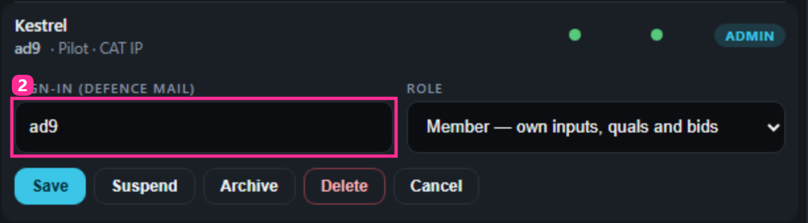
2. Admin → Users, a person opened: his sign-in box (2). The only way to change a sign-in.
3 · Faults Fable found in parts it had never read
On your word, Fable read three parts of the app it had never read in full: the Leave War, Inputs and OIL outside the Leave War. It read the night's copy, which carries everything live today, so these faults are very probably live now. Each was proved with a failing test. None is fixed yet.
Can take OIL away (the worst). Mon 13 Jul is a public holiday with a squadron event for all; Rocky works it and is given a full day of OIL. On Wed 15 Jul he is posted out as SANS. The published Monday now shows him gone from the crowd. The next amendment of that Monday, even one that only changes a remark, takes his OIL day away.
Says "saved" but keeps nothing (two). Saber attaches a document to a meeting of two men and presses Save: the window says "Input updated", but the document is never kept. And on an "Other" input, a change to "Goes to" made in the same save as answering the OIL question is thrown away.
The LATE mark (two). An input changed after the cut-off can read LATE for some of its people but on time for a man added to it earlier. And a LATE mark on a man added late to a shared input cannot be taken off, though the tap says it was.
Smaller (three). OIL leave filed on dates no leave period covers yet (2028, say) is not taken off his OIL. A weekend whose only work is an input with an unanswered OIL question publishes without a word about it. And the Leave War can write leave for a person who no longer exists, which no screen can reach today.
Recommended: fix them now, as a job of their own on its own branch, so they can go live without waiting for the two-squadron work. The OIL one first. Fable fixes the OIL one and the two that lose a save, because they touch OIL and saved data. Opus fixes the rest. Then the usual check: a walk of each, a test for each first, and the reads. Roughly half a day; a guess. Each fix comes to you for your look and "merge live" as usual.
Later: the 13 that wait for the Transfer step
Each happens only after a man has been moved between squadrons, and no screen can do that yet. In every example, Ranger moves from 142 to 149, counting from Thu 16 Jul. Hunter is 142's admin and Kestrel is 149's. The number on each line matches its picture.
B2 · The band on a schedule-side window at midnight. Hunter's input window, open at his move's midnight, says "This change could not be saved." with Close. Your approved sentence ("You are 149's from today…") is the Leave War's and the Tracker's. Recommended (changed 22 Nov): the same sentence as the Leave War's, naming the page, e.g. "You are 149's from today. This can't be saved in 142's Inputs.", drawn first. The plain words don't say why, so he may just press Save again. Picture
B4 · "Blocked: nothing was kept". A course, a medical or a Delete that runs across Ranger's move is refused with these general words. Your approved sentence covers leave only. Recommended: a sentence of its own, drawn first.Picture
B5 · The manning line at midnight. In a Leave War window open on Wed 15 Jul, the line "No manning row turns amber or red" disappears at midnight, because Wednesday is now in the past. Your drawing of the band kept that line. It goes for Osprey too, who did not move, so it is the Leave War's ordinary rule for a past day. Recommended: keep as built.Pictures
B7 · 149's Leave War starts him empty. In 149's Leave War, Ranger shows no leave and LVE 0 until Kestrel types his figure. His 142 leave stays in 142's Leave War. Recommended: keep. The Transfer step carries his leave across.Picture
B8 · 142 still counts his hidden leave. Ranger's leave on Mon 20 and Fri 24 Jul, approved in 142 before his move, is hidden from 142's list after it, as you ruled, but 142's balance still counts it: War bal 10.5. Without it the figure would read 12.5. My recommendation: keep counting it until the Transfer step carries it. The leave still happens and the schedule still shows it, so dropping it would leave his balance 2 days too high everywhere. The night's notes leaned the other way. Picture
B9 · Hidden leave cannot be taken off. If Ranger cancels Fri 17 Jul, no one can take it off: it is gone from 142's grid, day list and Approvals, and 149's Leave War never had it. Your ruling says taking leave off is never refused, but here there is no button to press. Recommended: settle it with the Transfer step.Picture
B10 · The ✕ on 142's Tuesday. Ranger's leave for Tue 14–Fri 17 Jul was filed before his move, and Hunter accepted it onto 142's schedule, where it sits on Tue 14. After the move, Tue 14 and Wed 15 are still 142's days, but Thu 16 and Fri 17 are 149's. Hunter presses ✕ on its row to take it off his own Tuesday: "Couldn't save that — try again", because the app checks him against every squadron the leave covers, and he is not 149's admin. Recommended (changed 22 Nov, your idea): keep it refused, but say who can, in the shape of your 20 Nov sentence: "Not saved: Ranger is 149's from Thu 16 Jul. Only Ranger or an admin of both 142 and 149 can take this leave off." Letting Hunter do it would not stay on his own day: the ✕ marks the whole leave rejected, so it would stop counting on 149's Thu 16 and Fri 17 too. 149's admin alone cannot do it either, for the same reason. The new words are drawn first.
B11 · 149's holiday OIL list. Kestrel makes Fri 17 Jul a 149 holiday. The OIL question lists Ranger's training of 15–17 Jul, which ran across his move, and Kestrel's Yes can never be saved. The line stays for good, and "Yes to all" is refused for everyone. Recommended: an OIL answer alone goes through for the admin of the squadron the input is in that day.
B12 · Taking back a move before its day. Hunter moves Ranger to 149 from tomorrow, then changes his mind: refused. Putting him back counts as moving him out of 149, which Hunter is not an admin of, so today only someone who is also an admin of 149, such as a master admin, can do it. Recommended: let the admin who made the move take it back before its day.
B13 · A meeting with a moved man in it. A 149 meeting for all, with Osprey added. Osprey moves to 142 from Thu 16 Jul, and until he takes himself out the meeting reads as 142's. Recommended: it stays on the squadron it was filed on, as you answered on 20 Nov for squadron meetings.
B14 · Settings windows at midnight. The Inputs, SANS and Calendar settings windows, open when a man's squadron changes at midnight, close without a word. Nothing was saved, so nothing is lost but what he typed. Your earlier answer was that the Calendar window closes only with its own ✕ or Escape. Recommended: keep as built. The other choice is a band like the Leave War's, drawn first. Picture
B15 · OIL given to several people at once. Hunter gives +1 OIL on 17 Jul to Piston, Ranger and Saber together: "This change could not be saved." and none of them get it, because Ranger is 149's that day. Grant OIL over Wed 15–Fri 17 gives Wed 15 only, with no word. Recommended: give it to those who can have it and name who was left out.Picture
B16 · The Balances page at midnight. Ranger types 33 into his balance at 23:58. At midnight the page becomes 149's Balances, with his 33 sitting in 149's row and no band. Nothing is saved. Recommended: the band, as the windows have.Picture
No picture yet for B10–B13: none was kept from the night's checks. They come with the Transfer step's drawings.
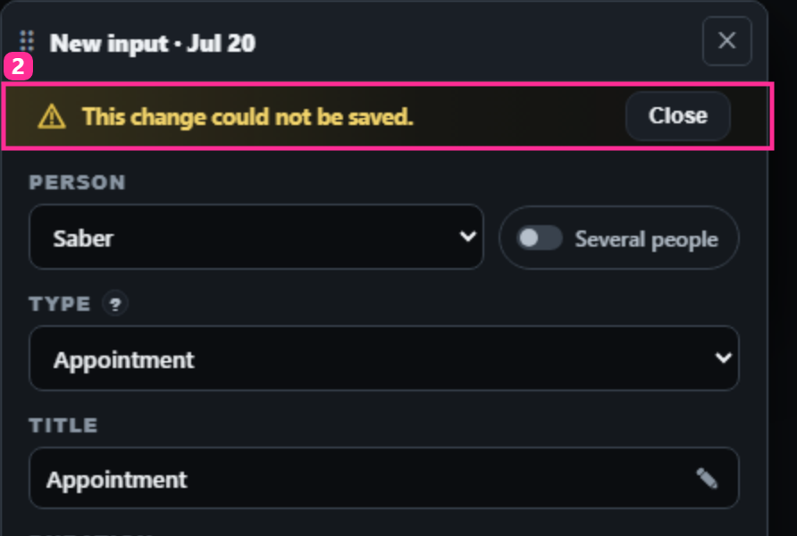
B2. Hunter's input window at 00:01: "This change could not be saved." and Close (2). His words stay in the box.
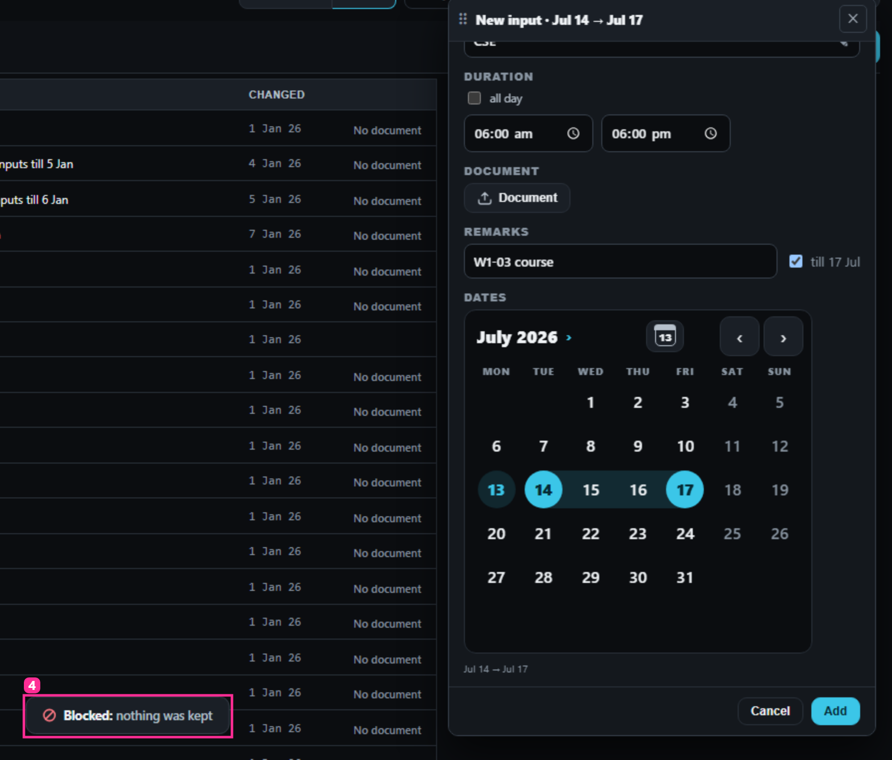
B4. Hunter adds a course for Ranger, 14–17 Jul: "Blocked: nothing was kept" (4).
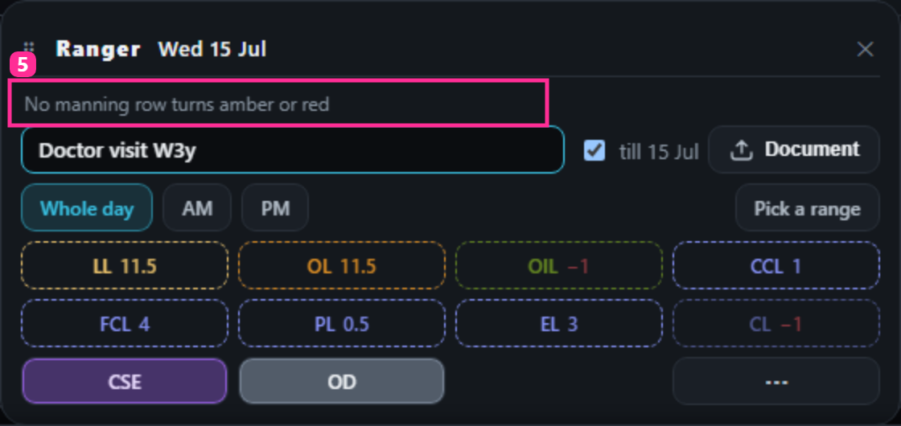
B5, 23:58. The manning line (5).
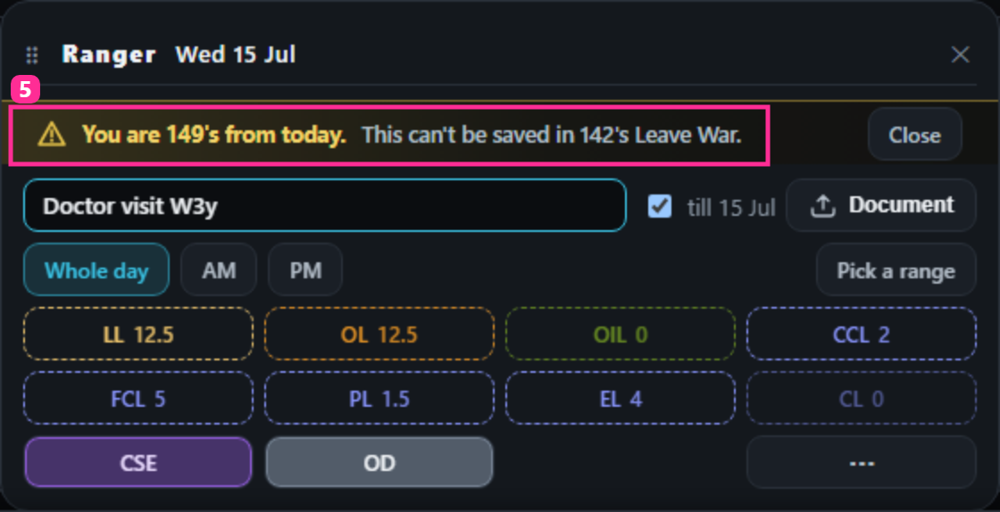
B5, 00:00:30. The band, and the manning line gone (5).
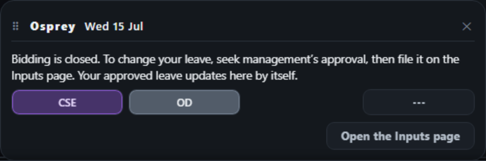
B5, Osprey, who did not move, at 00:00:30. His Wednesday is past, so his window shows "Bidding is closed…" in its place.
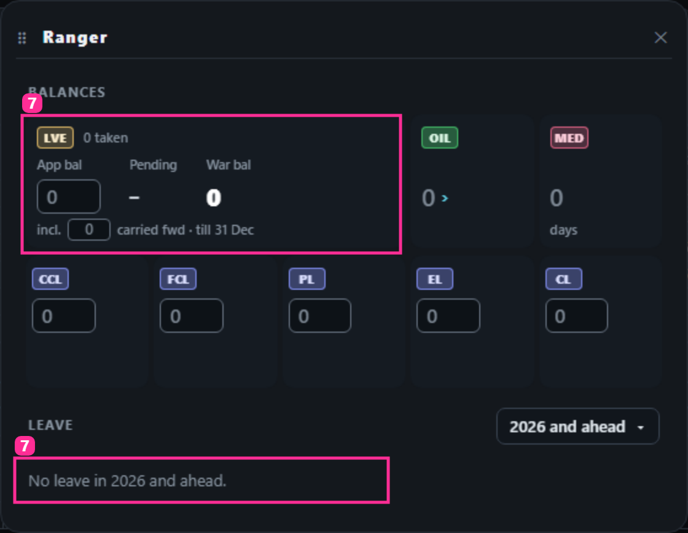
B7. 149's Leave War, Ranger's window: every balance 0 and "No leave in 2026 and ahead." (7).
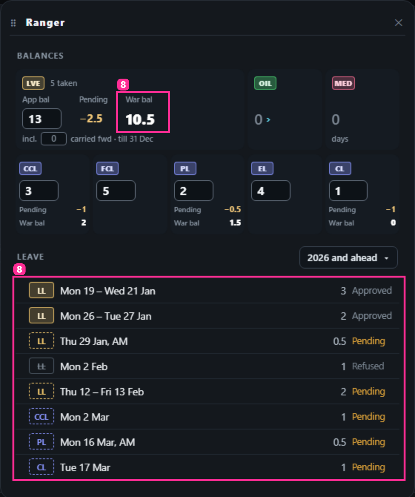
B8. 142's Leave War on Thu 16, Ranger's window: War bal 10.5 still counts Mon 20 and Fri 24 Jul, which are no longer in his list (8).
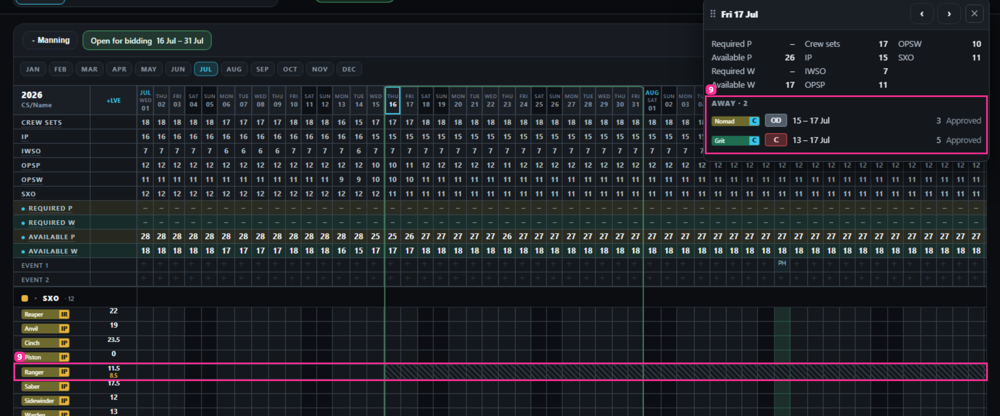
B9. 142's Leave War: Fri 17's list "AWAY · 2" without Ranger, and his row striped from Thu 16 (9). His approved Fri 17 has no button anywhere.
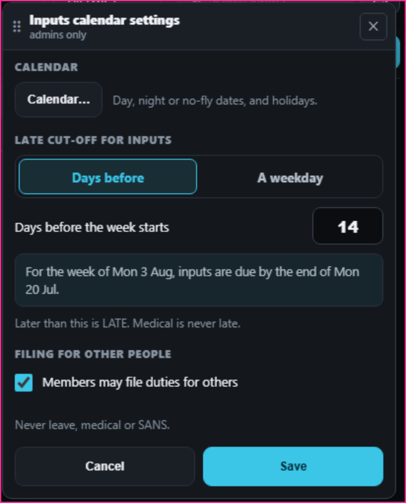
B14. The Inputs settings window (14). Open at 23:57, gone at 00:01 with no word.
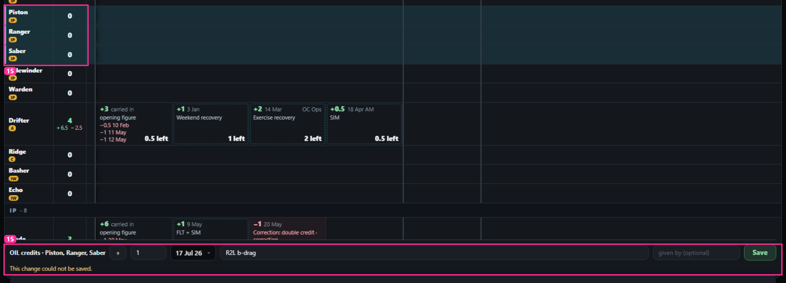
B15. The OIL tracker: Piston, Ranger and Saber picked (15), and at the bottom "This change could not be saved." (15). None of them got it.
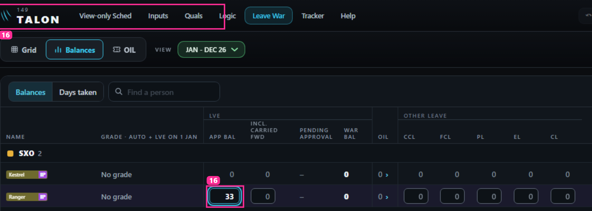
B16. At 00:00:30: the page is now 149's (16), with his 33 in 149's Ranger row (16) and no band.
To tell you: one change from your drawing
The waiting screen no longer has "Meanwhile you can look at the schedule, read only." or the "View the schedule" button. This follows from your 20 Nov answer removing the guest view: a person waiting for access sees only this screen until an admin approves him. No answer is needed unless you want it otherwise.